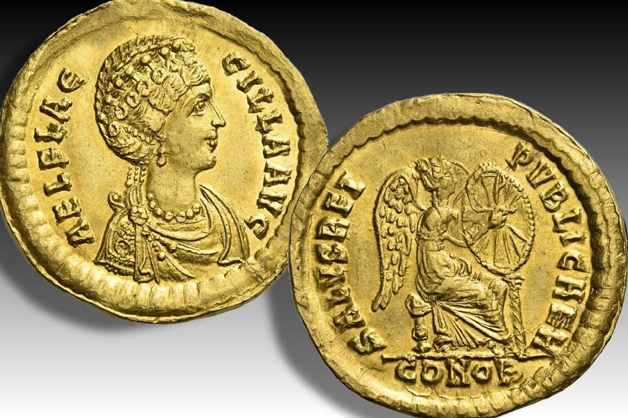
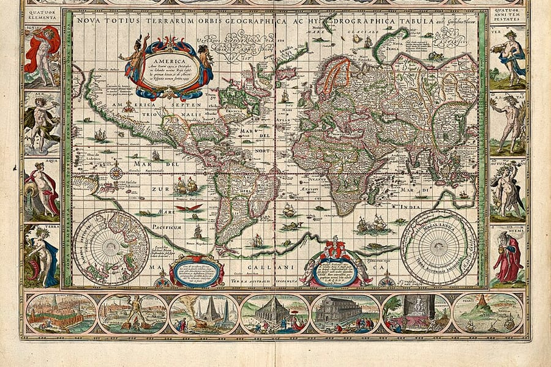
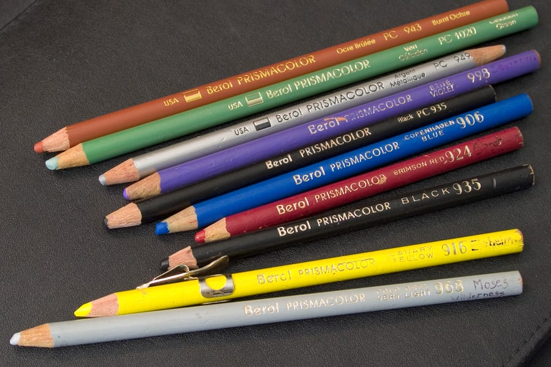
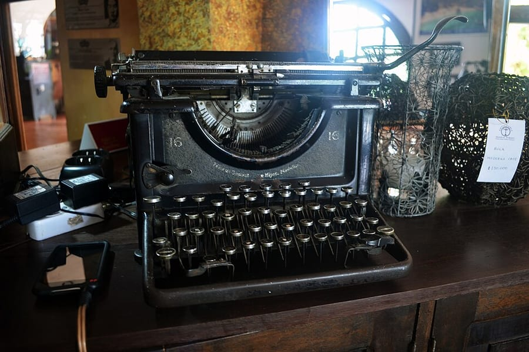
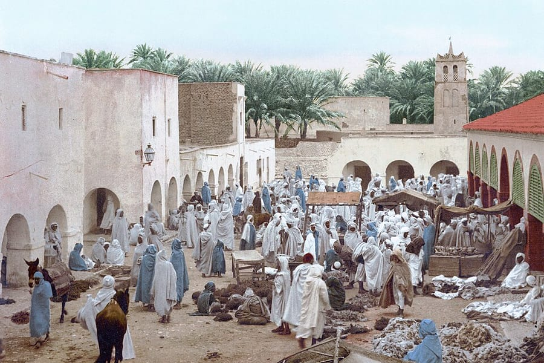

Series 01
陪孩子玩
孩子熱衷的東西，與其管，不如進去一起玩。這幾份筆記處理的是同一件事——怎麼從旁觀者變成隊友。
給家長的麥塊入門指南
孩子在玩什麼、為什麼好玩、家長怎麼開始、怎麼一起玩。從第一晚生存 SOP 到聽得懂孩子在說什麼的名詞表。
和八歲孩子一起玩 Steam
帳號怎麼開、家庭功能怎麼設、電腦跑不跑得動，以及十款實測選出的共玩遊戲——價格與語言支援都是查證過的。
Roblox 學習手冊
從玩家變成做遊戲的人。Studio 的五個視窗、第一支會動的程式、Luau 只要先會的五件事，加上一張自己打勾的進度表和 41 個英文名詞對照，還有兩份挑過的遊戲清單。
Roblox 小站：玩什麼、怎麼開始做
四十分鐘做出第一個作品的 Studio 講義，加上兩份挑過的遊戲清單——適合高年級到國中的，以及會用到工程、經營、程式的那些。
Series 02
陪孩子學
不是拿來考試的那種學。是用他聽得懂的語言，把重要的事講一次，然後把決定權慢慢交還給他——也包括那些沒有標準答案、單純因為好奇而想知道的事。

錢會自己長大嗎？
用麥塊的比喻，把指數化投資、分散、費用、複利、資產配置講給八歲小孩聽。附可以拉著玩的複利模擬器與全文注音。
WMI 備賽計畫
世界數學邀請賽的賽制、三年級的難度變化、32 條英文數學詞彙、12 題練習，以及一份給自己看的提醒：適配比苦練重要。

世界國旗地圖
點地圖上的任何一國，看那面旗的來歷。197 面國旗、八個旗幟家族，以及為什麼很多國家的國旗長得像。地圖是自己算的。

三年級工具箱
三年級開始社會、自然分家，英語也上場。五科加程式共 43 個線上資源，每一個都實際打開確認過，全文附注音，孩子可以自己讀。
小練習場
給學齡前的兩個練習：英文自然發音（對到家教課本的原題），以及圓形時鐘的認讀——紅色短針看「點」、藍色長針看「分」，從整點練到幾點幾分。
ㄅㄆㄇ 練習場
大班在學注音，但學校是一組一組教的。這個站可以先選「學到哪裡了」，題目就只出他學過的符號——不會在他才學到 ㄅㄆㄇㄈ 的時候跳出 ㄕ。認符號、聽音、分辨 ㄅ／ㄉ 這種差一撇的，到拼字與四聲。

打字小英雄
英文打字練習。畫面上的鍵盤會亮起下一個要按的鍵，顏色就是該用哪一根手指；遇到大寫還會同時亮起另一手的 Shift。五關從主排鍵一路練到含標點的短句。
三上詩詞 · 一學年 23 首
老師發的背誦進度表，加上每首詩的原文（附注音）、白話的意思，還有作者當時在想什麼。QR-Code 裡的影片連結全部解出來了，直接點就能看。

麥塊生存經濟學
他在遊戲裡蓋自動農場、跟村民殺價、規劃礦坑——那些其實就是投資。12 堂課把巴菲特挑公司的方法換成麥塊的講法，每一課都寫了低年級與中高年級兩種深度。
泉漳本無史 — 從閩越到台海
連橫說「臺灣固無史也」，但泉漳也不遑多讓。從閩越國、真諦法師、蒲壽庚、鄭成功一路到頂下郊拚，另附一條潮國的並行線。十九張可以點的地圖，四十六張歷代人物與場景圖像。
Series 03
我的學習筆記
把它整理成別人也讀得懂的樣子——這是我確認自己真的學會了的方法。有些來自別人的課，有些只是我自己想弄懂的事。